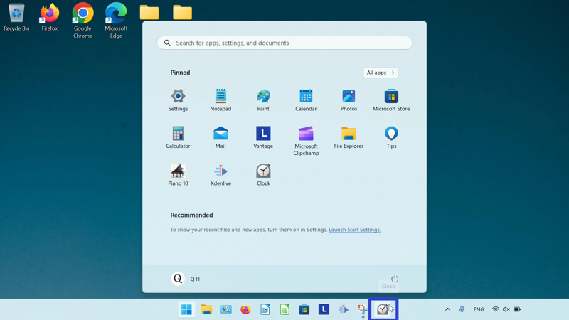

How to Open the Microsoft Windows Clock (Windows 11)
This tutorial covers:
What is the Microsoft Windows Clock
How to Open Microsoft Windows Clock With Search
How to Pin the Microsoft Windows Clock to the Taskbar:
How to Pin the Microsoft Windows Clock to Start
No time to scroll down? Click through these tutorial slides:
Follow along with a video tutorial:
What is the Microsoft Windows Clock
Windows 11 comes with the Windows Clock app. The Windows Clock includes a timer, alarm, stopwatch, and world clock. Integrate Spotify with Windows Clock to play music during Focus Sessions, or keep track of tasks with both the Windows Clock and the Microsoft To Do app.
How to Open Microsoft Windows Clock With Search
- Step 1: First go down to the taskbar and click the “Start” (four blue squares) button.

- Step 2: In the Start window that opens, click in the search bar at the top and type “clock”.

- Step 3: On the search results screen, click one of these three buttons.

- The Windows Clock app opens.

How to Pin Microsoft Windows Clock to the Taskbar With Search
- Step 1: Go down to the taskbar and click the “Start” (four blue squares) button.
- Step 2: In the Start window that opens, click in the search bar at the top and type “clock”.
- Step 3: On the search results screen, click “Pin to taskbar”.

- Step 4: Click the pinned Windows Clock icon on the taskbar to open Windows Clock.
- The Windows Clock app opens.
How to Pin Microsoft Windows Clock to the Taskbar With Right Click
- Step 1: First open the Windows Clock app. Go down to the taskbar and right click the app icon.
- Step 2: In the menu that opens, click “Pin to taskbar”.
How to Pin Microsoft Windows Clock to the Taskbar From Start
- Step 1: Go down to the taskbar and click the “Start” (four blue squares) button.
- Step 2: In the Start window that opens, right click the pinned Windows Clock app icon (if Windows Clock is not yet pinned to start, see How to Pin Microsoft Windows Clock to Start).

- Step 3: In the menu that opens, click “Pin to taskbar”.

- Step 4: Go down to the taskbar and right click the pinned Windows Clock icon. 
- Step 5: In the menu that opens, click “Clock” to open Windows Clock.

- The Windows Clock app opens.
How to Pin Microsoft Windows Clock to Start
- Step 1: First go down to the taskbar and click the “Start” (four blue squares) button.
- Step 2: In the Start window that opens, click in the search bar at the top and type “clock”.
- Step 3: On the search results screen, click “Pin to Start”.

- Step 4: Click the Start button twice, and in the Start window that opens, click the pinned Windows Clock app icon to open Windows Clock.
- The Windows Clock app opens.

Save a copy of these instructions for later with this free tutorial PDF.